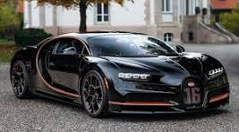
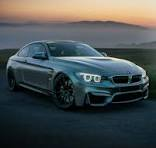
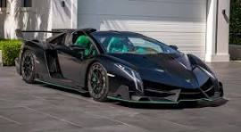
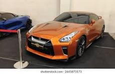
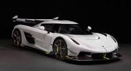
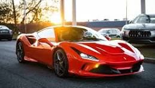

Bugatti

Bugatti Automobiles S.A.S adalah produsen mobil sport mewah asal Prancis yang didirikan pada tahun 1909 oleh Ettore Bugatti.
Merek ini dikenal karena menggabungkan desain artistik dengan teknologi canggih untuk menciptakan mobil-mobil yang sangat cepat dan eksklusif.
Bugatti telah menghasilkan beberapa model ikonik, termasuk Bugatti Veyron dan Chiron, yang dikenal sebagai salah satu mobil tercepat di dunia.
Setelah mengalami berbagai perubahan kepemilikan, Bugatti saat ini dimiliki oleh Grup Volkswagen dan terus mempertahankan reputasinya sebagai
produsen mobil super mewah dengan performa luar biasa.
BMW

Bayerische Motoren Werke AG, atau lebih dikenal dengan BMW, adalah produsen mobil dan sepeda motor asal Jerman yang didirikan pada tahun 1916.
BMW terkenal karena memproduksi kendaraan mewah dan performa tinggi yang menggabungkan teknologi canggih dengan desain elegan.
Merek ini memiliki reputasi global sebagai simbol kualitas, inovasi, dan pengalaman berkendara yang dinamis.
Selain mobil penumpang, BMW juga memproduksi sepeda motor di bawah merek BMW Motorrad, serta memiliki beberapa merek lain seperti Mini dan Rolls-Royce.
Lamborghini

Automobili Lamborghini S.p.A. adalah produsen mobil sport mewah asal Italia yang didirikan pada tahun 1963 oleh Ferruccio Lamborghini.
Merek ini dikenal karena menciptakan mobil-mobil dengan desain yang mencolok, performa tinggi, dan teknologi canggih.
Lamborghini telah menghasilkan beberapa model ikonik seperti Miura, Countach, Diablo, Murciélago, dan Aventador, yang semuanya dikenal
karena kecepatan dan gaya yang luar biasa. Saat ini, Lamborghini dimiliki oleh Grup Volkswagen melalui anak perusahaannya Audi, dan terus
mempertahankan reputasinya sebagai produsen mobil super mewah yang inovatif dan eksklusif.
Nissan

Nissan Motor Co., Ltd. adalah produsen mobil asal Jepang yang didirikan pada tahun 1933.
Merek ini dikenal karena memproduksi berbagai jenis kendaraan, mulai dari mobil penumpang hingga truk dan SUV.
Nissan telah menjadi salah satu produsen mobil terbesar di dunia dan terkenal dengan inovasi teknologi,
termasuk pengembangan mobil listrik seperti Nissan Leaf.
Selain itu, Nissan juga memiliki aliansi strategis dengan Renault dan Mitsubishi,
yang memperkuat posisinya di pasar global.
Koenigseg

Koenigsegg Automotive AB adalah produsen mobil sport mewah asal Swedia yang didirikan pada tahun 1994 oleh Christian von Koenigsegg.
Merek ini dikenal karena menciptakan mobil-mobil super eksklusif dengan performa luar biasa, teknologi inovatif, dan desain futuristik.
Koenigsegg telah menghasilkan beberapa model ikonik seperti Agera, Regera, dan Jesko, yang semuanya dikenal karena kecepatan tinggi dan
teknologi canggih seperti sistem hibrida dan aerodinamika aktif. Meskipun produksinya terbatas, Koenigsegg telah mendapatkan reputasi global
sebagai salah satu produsen mobil tercepat dan paling eksklusif di dunia.
Ferrari

Ferrari S.p.A. adalah produsen mobil sport mewah asal Italia yang didirikan pada tahun 1939 oleh Enzo Ferrari.
Merek ini dikenal di seluruh dunia sebagai simbol kecepatan, kemewahan, dan prestise.
Ferrari telah menciptakan beberapa model ikonik seperti 250 GTO, F40, Enzo, dan LaFerrari, yang semuanya dikenal karena performa tinggi dan desain elegan.
Selain itu, Ferrari memiliki sejarah panjang dalam balap mobil, terutama di Formula 1, di mana mereka telah meraih banyak kemenangan dan gelar juara dunia.
Saat ini, Ferrari terus mempertahankan reputasinya sebagai produsen mobil sport eksklusif dengan inovasi teknologi dan desain yang menakjubkan.